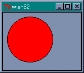
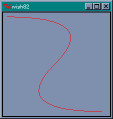
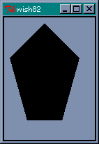
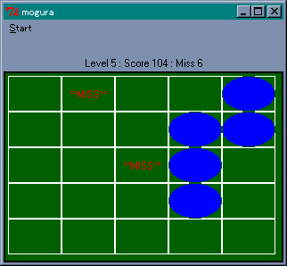

キャンパスウィジェット
最後に図形を表示する「キャンバス (canvas) 」ウィジェットを説明します。キャンバスは、矩形、直線、楕円などの図形のほかに、イメージ、文字列、任意のウィジェットを表示することができます。まず、キャンバスウィジェットを生成してみましょう。wish のコンソールから次のコマンドを打ち込んでください。
% canvas .c0 .c0 % pack .c0
空のウィンドウが表示されました。これで図形を表示するキャンバスをウィンドウに配置したことになります。また、キャンバスとスクロールバーを組み合わせて、表示範囲を変更することもできます。
● create コマンド
キャンバスを配置しただけでは、なにも図形は描かれていません。図形を生成するには、ウィジェットコマンド create を使います。
create 種別 座標 オプション
指定できる種別には、次のものがあります。
| 名前 | 種別 |
|---|---|
| line | 直線（折れ線） |
| oval | 楕円 |
| arc | 円弧（楕円の円周の一部） |
| rectangle | 矩形 |
| polygon | 多角形 |
| image | イメージ |
| bitmap | ビットマップ |
| text | 文字列 |
| window | 任意のウィジェット |
●楕円を描く
それでは実際に図形を表示してみましょう。
% .c0 create oval 10 10 100 100 1
ウィンドウに楕円が描画されました。楕円の場合、指定した矩形に内接するように描画されます。返された数値は図形を表す番号 (ID) です。これを使って図形を操作することができます。ウィジェットコマンドの cget や configure に対応するのが、itemcget と itemconfigure です。たとえば、楕円の中を赤色に塗りつぶしてみましょう。
% .c0 itemconfigure 1 -fill red % 楕円の描画
楕円の中が赤くなりましたね。よく使われるオプションには次のものがあります。
| オプション | 機能 |
|---|---|
| -fill 色 | 内部を塗りつぶす色 |
| -stipple ビットマップ | 内部を塗りつぶすときの模様になるビットマップ |
| -outline 色 | 枠の色 |
| -width 幅 | 枠の幅 (デフォルトは 1.0) |
-fill のデフォルトは none です。これは透明を表してます。-fill で色を指定した後でも、itemconfigure で none に再設定すれば透明に戻すことができます。
●矩形を描く
矩形も楕円と同じ指定方法です。-stipple には、wish に標準で組み込まれているビットマップを指定するのが一般的です。よく使うビットマップが灰色の模様を表す gray12, gray25, gray50, gray75 です。Widget Tour にデモプログラムが用意されているの見てください。それでは実際に描画してみましょう。
% .c0 create rectangle 110 10 210 110 -fill green -stiple gray25 2
 矩形の描画
矩形の描画
●直線を描く
次は直線です。2 点間だけではなく複数の点を指定すると、その間を直線で結びます。直線を描画する前に、楕円と矩形を消しましょう。
% .c0 delete 1 2
これで空のウィンドウに戻りました。delete は図形を消去する canvas のウィジェットコマンドです。では、直線を描画してみましょう。
% .c0 create line 10 10 200 10 10 200 200 200 3
画面に Z 字型の線が描かれましたね。線の色を指定するオプションは、直線の場合は -outline ではなくて -fill で指定します。では緑色に変更してみましょう。
% .c0 itemconfigure 3 -fill green -width 2.0 %
-width で線を太くしています。オプション -smooth を true に指定すると、滑らかな曲線を描画することができます。
% .c0 create line 10 10 200 10 10 200 200 200 -smooth true -fill red 4 直線の描画 (-smooth 指定)
このほかにも、矢印の設定や折り返し時の形など、いろいろなオプションが用意されています。
●多角形を描く
次は多角形です。五角形を作ってみましょう。各頂点の座標を指定しますが、最初の点と最後の点が結ばれて閉じた図形となります。
% .c0 create polygon 10 60 60 10 110 60 85 150 35 150 5
polygon では、デフォルトで -fill オプションが黒、-outline は描画されません。それから、line と同様に -smooth を true に指定すると、多角形の角を丸めます。実際に試してみてください。
 多角形の描画●円弧を描く
次は円弧です。楕円の円周の一部分を表示します。座標の指定は oval と同じですが、オプションで表示する範囲を指定します。
| オプション | 機能 | ||||||||
|---|---|---|---|---|---|---|---|---|---|
| -start 角度 | 開始位置を角度で指定 | ||||||||
| -extent 角度 | 終了位置を開始位置からの角度で指定 | ||||||||
| -style 種別 |
|
角度は度数でプラスが反時計回り、マイナスが時計回りとなります。また、oval と同じオプションが使えます。ただし、-style が arc の場合、-fill で色を指定しても表示されません。chord か pieslice に変更すると表示されます。
●イメージの表示
キャンバスはイメージとビットマップも表示することができます。
image x y オプション bitmap x y オプション
x, y は表示する座標を表します。イメージのどの位置に対応させるかは、オプション -anchor で指定します。これは pack と同じ指定方法です。データとの対応は -image と -bitmap で指定します。それでは、例題として Tcl/Tk の配布キットにあるロゴ (logomed.gif) をキャンバスに表示してみましょう。
% image create photo i0 -file logomed.gif i0 % .c0 create image 100 100 -image i0 6
これでキャンバスにイメージが描画されます。
●文字列の表示
次は文字列です。当然ですがキャンバスに文字を描くことができます。
text x y オプション
x, y は座標で、オプションには次のものが使えます。
| オプション | 機能 |
|---|---|
| -anchor 位置 | 座標とテキストの位置関係 |
| -font フォント | 文字のフォント |
| -fill 色 | 文字の色 |
| -justify mode | center (中揃え), left (左揃え), right (右揃え) |
| -text 文字列 | 表示する文字列 |
| -width 長さ | 1 行の長さ |
それでは実際に試してみましょう。
% .c0 create text 10 10 -text "hello, world!" -anchor nw 7
これで (10,10) の位置から hello, world! が表示されます。
●ウィジェットの挿入
キャンバス中にほかのウィジェットを表示させる場合は window を使います。
| オプション | 機能 |
|---|---|
| -anchor 位置 | 座標とテキストの位置関係 |
| -window ウィジェット | 表示するウィジェット |
| -width 幅 | ウィジェットの幅 |
| -height 高さ | ウィジェットの高さ |
たとえば、ラベルを表示させてみましょう。
% label .l0 -text "hello, world!" -bg green .l0 % .c0 create window 30 30 -window .l0 -anchor nw 8
今度は背景色が緑の hello, world! が表示されました。このほかにも、Widget Tour にはいろいろなデモプログラムが用意されているので、参考にしてください。
●図形操作用コマンド
キャンバスで使用できる図形をひととおり説明したところで、図形を操作するときによく使うコマンドを説明しましょう。
| コマンド | 機能 |
|---|---|
| type ID | 図形の種別を返す |
| bbox ID ... | 指定した図形を囲む領域（矩形）をリストにして返す |
| coords ID [座標...] | 図形の座標の設定や問い合わせ |
| move ID dx dt | 図形の移動 |
| lower ID [ID] | 重なり順を低くする |
| raise ID [ID] | 重なり順を高くする |
| bind ID [イベント [コマンド]] | バインディングの設定 |
ウィジェットと同様に、図形に対してもバインディングを設定することができます。これはタグと一緒に詳しく説明します。
タグとバインド
キャンバスで作成した図形にはバインディングを設定することができます。簡単な例題として、作成した矩形をドラッグで移動させてみましょう。次のプログラムを実行してください (リスト 14)。
リスト 14 : ドラッグ
canvas .c0 -width 200 -height 150
pack .c0
set r [.c0 create rectangle 10 10 20 20 -fill brown]
.c0 bind $r <B1-Motion> {
set x1 [expr %x-5]
set x2 [expr %x+5]
set y1 [expr %y-5]
set y2 [expr %y+5]
.c0 coords $r $x1 $y1 $x2 $y2
}
最初に、一辺の長さが 10 の矩形を作ります。次に、その矩形に対してバインディングを設定します。イベント <B1-Motion> は、左ボタンを押した状態でマウスを動かした場合、つまりドラッグに対応します。イベントハンドラの中では、%x, %y はマウスの座標に変換されることに注意してください。新しい座標を計算してから、図形の位置を coords で変更します。
●タグの設定
それでは操作する矩形を 3 つに増やしてみましょう。それぞれの矩形にバインディングを設定してもいいのですが、同じようなプログラムをいくつも書くのは面倒ですね。このような場合、「タグ」を設定すると簡単にプログラムを記述することができます。タグ (tag) には荷札という意味があり、図形に識別子をつける働きをします。そして、図形を操作するコマンドは、操作対象となる図形の指定を、番号のほかにもタグを使って行うことができるのです。タグの設定は、図形を生成するときにオプション -tags で行います。それではタグを指定して矩形を 3 つ作ります。
.c0 create rectangle 10 10 20 20 -fill brown -tags brown .c0 create rectangle 20 10 30 20 -fill brown -tags brown .c0 create rectangle 30 10 40 20 -fill brown -tags brown
タグは文字列で指定します。今回は brown としました。このタグに対してバインディングを設定します。
.c0 bind brown <B1-Motion> {
set x1 [expr %x-5]
set x2 [expr %x+5]
set y1 [expr %y-5]
set y2 [expr %y+5]
.c0 coords current $x1 $y1 $x2 $y2
}
図形の番号ではなくタグ brown を指定します。ただし、このままでは操作対象となる矩形がわかりません。この場合、特別なタグ current を使います。current は Tcl/Tk が設定するタグで、マウスカーソルがある図形上にくると、その図形にタグ current を設定し、ぞの図形からマウスカーソルから出るとタグ current を削除します。つまり、マウスカーソルが指している図形はタグ current で指定することができるのです。これで、複数の矩形をひとつのイベントハンドラで操作することができます。
このほかにも、タグには図形をまとめて操作することができる、という利点があります。たとえば、矩形の色をまとめて変更する場合は、タグを使って行えばいいのです。
.c0 itemconfigure brown -fill green
これで brown の矩形は色を green に変更することができます。削除する場合もタグを使えば簡単です。
.c0 delete brown
これでタグ brown を持つ矩形をすべて削除することができます。
モグラたたき
それでは、最後にゲームを作ってみましょう。最初はパズルを考えていたのですが、簡単なアクションゲームならば Tcl/Tk だけでもなんとかなりそうなので、「モグラたたき」を作ることにしました。5 行 5 列の穴からモグラが出てくるので、それをマウスでクリックしてください。私は絵心のないプログラマなのでモグラの代わりに楕円を使いますが、グラフィック表示するように改造するとゲームらしくなるでしょう。
ゲーム作成のポイントは、モグラの出し入れとモグラを叩く処理です。モグラを叩くことはマウスのクリックで行いますので、モグラ (楕円) に対してバインディングを設定すれば簡単です。
● after コマンド
モグラの出し入れですが、ユーザーからの入力がなくてもゲームを進行させなくてはいけなので、単純なイベント駆動型アプリケーションでは「モグラたたき」を実現することはできません。このため、プログラム自身でなんらかのきっかけを作ってやる必要があります。このような場合、役に立つコマンドが after です。after の機能を示します。
| コマンド | 機能 |
|---|---|
| atter msec | 指定された時間 (単位は msec) だけ待つ |
| after msec command | 指定した時間経過後コマンドを実行 (固有番号を返す) |
| after cancel 固有番号 | 固有番号のコマンド実行待ちを取り消す |
| after cancel コマンド | コマンドの実行待ちを取り消す |
| after info [固有番号] | 固有番号の実行待ちコマンド情報を返す |
このように、after には単純な時間待ちを行うほかに、一定時間後に指定したコマンドを起動するタイマーの働きも持っています。たとえば、ゲームを進行させるプロシージャを game としましょう。game を一定間隔で実行させる場合、game の最後で after を使って自分自身の起動を設定すればいいのです。具体的には次のようにプログラムします。
proc game {} {
# game の処理
.....
after 500 game
}
これで 500 msec 後に game が実行されます。もっとも、厳密に 500 msec ごとに game が実行されるわけではありません。game の処理にも時間がかかりますし、Windows はマルチタスクで動作しているので、ほかのタスクの影響も受けるからです。まあ、モグラたたきのようなゲームの場合、厳密なリアルタイム処理は必要としないので、これで十分です。
game は一定間隔で時を刻むので、これを使ってモグラを管理します。モグラたたきの場合、モグラが隠れている状態から、モグラが出る、モグラを叩く、または叩き損ねてモグラが逃げる、そしてモグラが隠れている状態に戻ります。この場合、モグラが穴を移動するのではなく、各穴にモグラが一匹ずついて出たり隠れたりする、と考えた方が簡単です。つまり、モグラを中心に考えるのではなく、穴の状態を基準にプログラミングするのです。
モグラを出す場合は、モグラが隠れている穴の中からランダムに選べばいいでしょう。このあとの状態は、それぞれ持続時間が異なります。モグラが出ている時間を 3 秒、叩かれた状態を 1 秒間、逃げた状態を 2 秒間表示するとしましょう。この時間管理を game を使って行います。具体的には、穴の状態を配列 state で表し、持続時間を配列 mogutime で管理します。
state 0 : モグラが隠れている状態 1 : モグラが出ている状態 2 : モグラを叩いた状態 (HIT! と表示する) 3 : モグラが逃げた状態 (MISS と表示する) 4 : 準備中
モグラの状態が変化するときは、state の値を書き換えると同時に、mogutime の値をセットします。game は state が 0 以外の場合、mogutime の値を -1 していき、mogutime が 0 になったら (タイムアップ)、次の状態へ変化させます。たとえば、モグラを出すときは、state が 0 の穴からランダムに選び、state を 1 に書き換え、mogutime に 6 をセットします。game は 500 msec 間隔で実行されるので、これで約 3 秒間モグラを表示することになります。
state が 1 でタイムアップした場合は、モグラを叩き損ねた場合です。このときは、state を 3 に書き換えて mogutime を 4 にセットします。モグラを叩いた場合は、state を 2 に書き換え、mogutime を 2 にセットします。この処理はモグラにバインディングされたイベントハンドラで行い、マウスの左クリックで実行されます。この処理は game の実行とは関係なく発生します。つまり、モグラを叩く処理と game の処理は非同期で行われるのです。
一般に、非同期の処理をプログラミングすることはたいへん難しいのですが、GUI アプリケーションの場合、イベントが非同期で発生することは当たり前のことです。Tcl/Tk ではイベントントハンドラをプログラムするだけで済みます。
state が 2 や 3 の状態でタイムアップしたら、state を 4 の状態 (準備中) にします。これは同じ穴からモグラがすぐに出てこないようにするためです。この時間は 3 秒間とし、タイムアップしたら state を 0 に戻します。
それから、ゲームに変化をつけるためにレベルを導入します。最初はレベル 1 で、10 匹モグラを叩くたびにレベルアップします。1 匹叩くたびにレベルだけ得点が入ります。レベル 1 のときは 1 点しか入りませんが、レベルが 10 になると 1 匹叩くたびに 10 点入ります。そして、レベルアップするたびに、同時に出現するモグラの数を増やしましょう。10 匹叩き損ねたらゲームオーバーとします。
表示にはキャンバスウィジェットを使いますが、モグラを出すたびに楕円を描画していては無駄ですね。あらかじめ必要な図形を用意しておいて、穴を表す図形の背後に隠しておくことにします。
ほとんどのウィンドウシステムでは、上にある窓が下にある窓を覆い隠します。ウィジェットにも順番があり、Tcl/Tk の場合はあとから作成したウィジェットが上になります。ウィジェットの重なり順を変更するコマンドが raise と lower です。
raise ウィジェット１ [ウィジェット２] lower ウィジェット１ [ウィジェット２]
ウィジェットがひとつの場合、raise は重なり順をいちばん上にし、lower はいちばん下にします。ウィジェットを 2 つ指定した場合は、ウィジェット 2 に対してウィジェット 1 を、raise では上に、lower では下にします。
キャンバスウィジェットで作成する図形も同じです。あとから作成した図形が上となり、その順番をウィジェットコマンド raise と lower で変更することができます。このゲームでは、穴を矩形、モグラを楕円、HIT! と MISS をテキストで描画しておき、状態に合わせてその図形の優先順位をいちばん上にします。
作成した図形の ID は配列に格納しておきます
hole : 穴の ID を格納する mogu : モグラの ID を格納する miss : MISS の ID を格納する hit : HIT! の ID を格納する
穴は 5 行 5 列なので、各配列は 2 次元配列としてアクセスします。といっても、Tcl の場合は連想配列しかありません。配列を表す ( ) の中では変数展開が行われることを使って、擬似的に 2 次元配列を実現します。つまり、(x,y) の位置にある穴の ID は hole($x,$y) とアクセスします。また、その状態を求めるときは state($x,$y) とします。
●バインディングの設定
モグラを作成したときは、バインディングを設定しなくてはいけません。これは次のように行います。
set mogu($x,$y) [.c0 create oval $x1 $y1 $x2 $y2 \
-outline darkgreen -fill blue]
.c0 bind $mogu($x,$y) <Button-1> "attack $x $y"
これは図形の初期化ルーチンから抜き出したものです。作成した図形は mogu に格納し、その図形に対してイベントハンドラをバインディングしています。イベントハンドラは attack ですが、引数の $x と $y は変数展開が行われるので、それぞれのモグラにバインディングされる attack には、異なる引数が与えられることに注意してください。これでクリックされたモグラを特定することができるので、わざわざマウスの位置を求める必要はありません。
●attack
イベントハンドラ attack は次のようになります (リスト 15)。
リスト 15 : イベントハンドラ attack
proc attack {x y} {
global state mogutime mogu hit hit_count now_mogu score level
incr hit_count
if {$hit_count && [expr $hit_count % 10] == 0} {
incr level
}
incr score $level
incr now_mogu -1
set state($x,$y) 2
set mogutime($x,$y) 2
.c0 lower $mogu($x,$y)
.c0 raise $hit($x,$y)
print_label
}
変数 hit_count は叩いたモグラの数、now_mogu は穴から出ているモグラの総数を表します。これらの変数はレベル管理に使います。モグラを隠している状態では、クリックしてもイベントハンドラは起動されないので、state のチェックを行う必要がありません。このへんは wish が面倒を見てくれるので、プログラミングは簡単になります。print_label はスコアを計算してラベルに表示します。
●game
ゲームを進めるために一定間隔で実行される game は次のようになります (リスト 16)。
リスト 16 : ゲームの進行
proc game {} {
global state mogutime
for {set x 0} {$x < 5} {incr x} {
for {set y 0} {$y < 5} {incr y} {
if {$state($x,$y) != 0 } {
incr mogutime($x,$y) -1
if {$mogutime($x,$y) == 0} {
if [change_mogura $x $y] {
game_over
return
}
}
} else {
gen_mogura $x $y
}
}
}
update
after 500 game
}
game では state が 0 以外の穴について mogutime を -1 していき、タイムアップしたならばモグラのステートを変更するため change_mogura を呼び出します。change_mogura ではモグラの状態を変更します。もしも、ミスが 10 回に達したら 1 を返すので、ゲームの終了処理を game_over で行います。このあとは return で game を抜けます。
after の前の update は、待ちイベントを実行するコマンドです。モグラの出し入れやスコア表示など、Tcl/Tk では簡単に行っているように見えますが、そのたびに画面更新のイベントが発生します。これらの処理は wish が面倒をみてくれるのですが、プログラムの実行に時間がかかると、その処理を行うことができません。このため、すべての待ちイベントを処理する update を実行して、画面の状態を確実に更新するようにしています。
あとは特に難しい処理を行っていないので、ここまでの説明でソースファイルは読むことができるはずです。ゲームは単純なのですぐに飽きるでしょう。いろいろと改造してみてください。
 モグラたたきゲームの画面おわりに
入門編ということで、簡単で面白そうな機能をひととおり説明しました。この記事を読んで Tcl/Tk に興味を持たれた方は、ぜひプログラムを作ってみてください。面白いプログラムができたなら Oh!X に投稿しましょう。
このほかにも、便利で役に立つ機能はたくさんあります。特にテキストウィジェットは、テキスト編集だけではなく、マークやタグを設定することで、高度な処理が可能です。ハイパーテキストも実現できますし、Perl と Tk を組み合わせた処理系 Perl/Tk を使って Web ブラウザを作った人もいるそうです。Tcl/Tk でも、まだまだいろいろなことができそうなので、応用編で紹介したいと思います。
参考文献
- 久野靖, 『入門 tcl/tk』, アスキー出版局, 1997
- John K. Ousterhout 著, 西中芳幸 石曾根信 訳, 『Tcl & Tk ツールキット』, ソフトバンク, 1995
- Sriram Srinivasan 著, 須田隆久 訳, 『実用Perlプログラミング』, オライリー・ジャパン, 1998